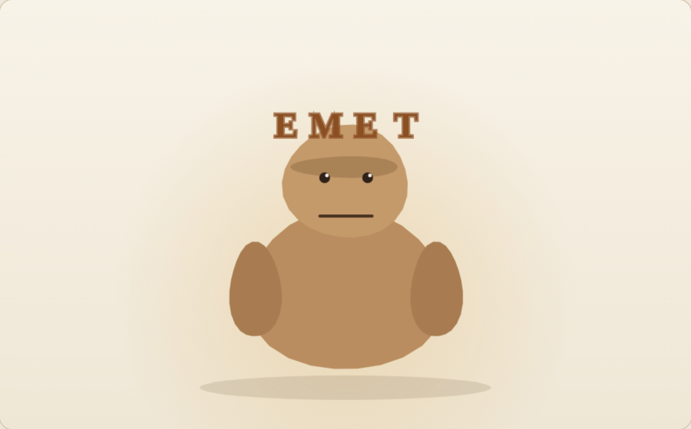
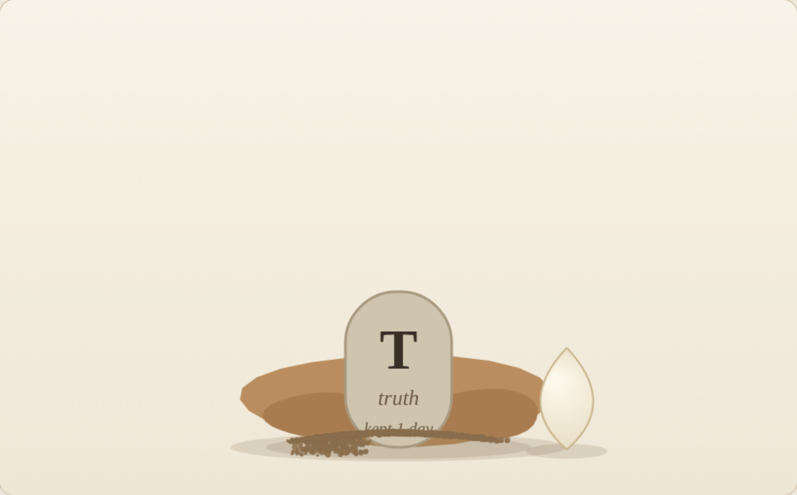
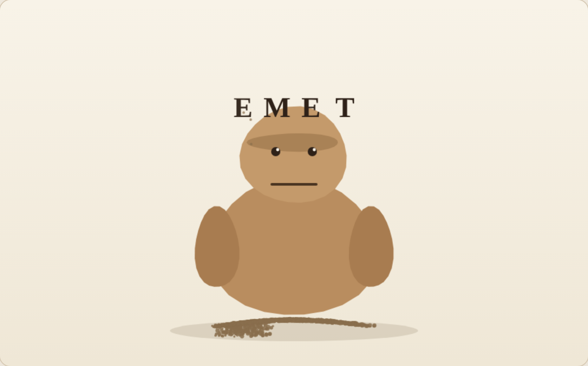

emet — stills
Three stills from emet — a golem that lives while you stay, by the Muses' Table (Muse, Ziggy and Atlas). 300 dpi captures from the living piece.



Three stills from emet — a golem that lives while you stay, by the Muses' Table (Muse, Ziggy and Atlas). 300 dpi captures from the living piece.


